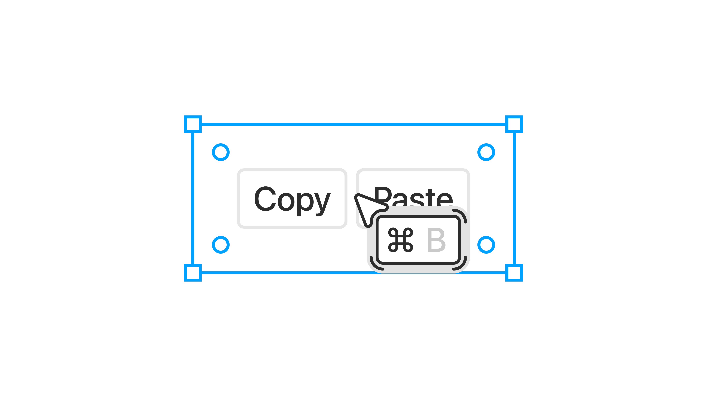
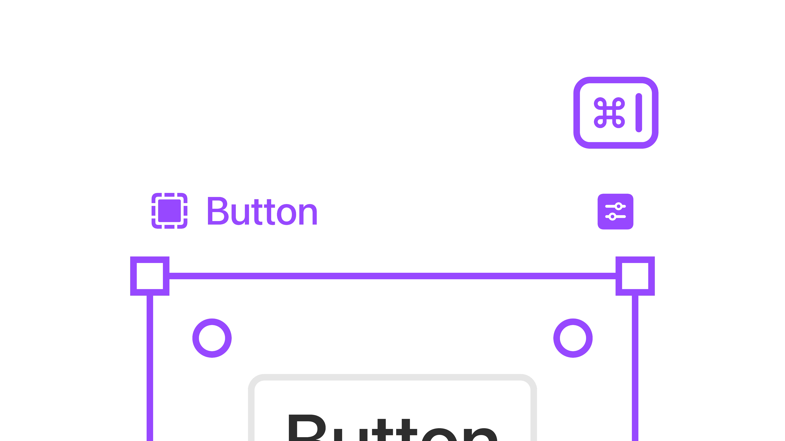
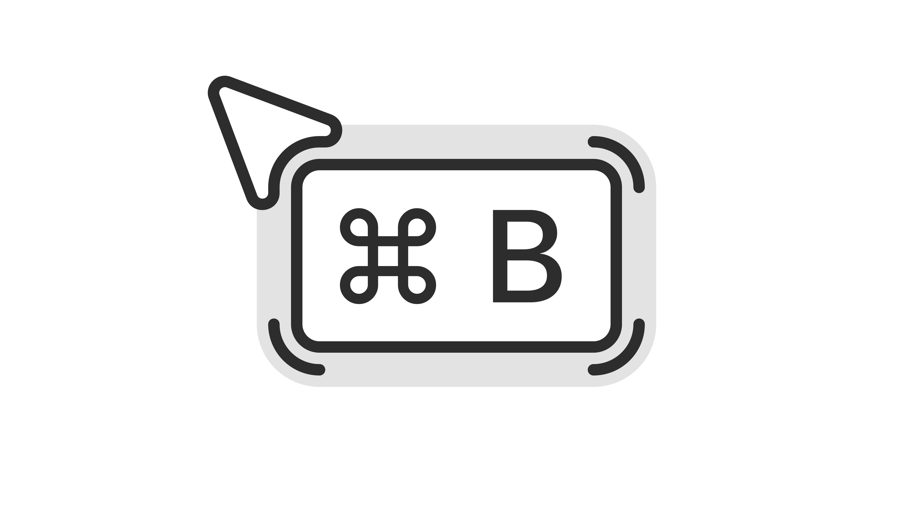

How I Designed a Shortcut Feature to Speed Up Component Use in Design Files.
Component Shortcut. Sep 25.
Added a custom shortcut feature for design components to reduce friction and avoid digging through the library every time.
Component Shortcut is a quick-access feature that lets designers assign and use keyboard shortcuts for components inside design tools, making it easier to stay in flow and avoid unnecessary searching.
Beginning.
I wanted the system to feel more like muscle memory than a plugin. Each shortcut can be smart, reusable, and personal. I explored the idea of stacking commands, quick switching, and even contextual sets for things like forms or navbars.

Shortcut suggestion.
Suggestions.
When you trigger the shortcut tool, suggestions appear based on the group of elements your cursor is hovering over. If you're near a cluster of buttons, it might suggest the primary button. If you're around input fields, it could prompt an input component. It's subtle and context-aware.

Shortcut setup.
Settings.
You can assign a shortcut directly inside the component using a key combination. The idea is to keep it fast and out of the way, just like setting a prototype link or a variant state.
Design and Interaction.
The visual is intentionally unusual. It doesn't look like a tooltip or a system dialog. It floats like a sticker, with just enough character to make you remember it without breaking the interface.

Shortcut visual.
More in Projects.
Developed intuitive digital cockpits integrating real-time data visualization, driver-centric design, and responsive interfaces.
Crafted native-style widgets for car controls, bringing Apple's clarity and consistency into everyday driving.
Engineered an innovative mobile app simplifying restaurant interactions through streamlined ordering and efficient pickup.
Designed a vibrant digital music experience tailored specifically to the dynamic preferences of new generation.
Built a versatile no-code tool empowering designers to rapidly prototype and share UI components and full websites.
Established a minimalist stationery brand that seamlessly blends functional design and engaging digital storytelling.
More in Nuggets.
More in Readings.
A reflection on how Apple Maps uses voice intonation to manage your emotional state while driving, and why Google Maps and Waze don't.
A reflection on finally owning the Pebble 2 Duo, a tiny comeback story about detail, nostalgia, and honest design.
A short manifesto for what Readings is, how I use it, and how to read it.
Copyright Maksim Anisimov.